Hello, It's Altaf
a SWE Student & Web Developer
Currently I'm studying Software Engineering @SUST. I like to do code and enjoy bulding websites and apps. I also love photograpghy and to travel new places.

About Me
Software Engineering Student at SUST Love to explore new places and like to capture moments , i also do love to cinmatography and photograpghy A Web Developer. Apps and Games Developer. A passionate learner.
Read MoreServices
UI / UX Design
Creating intuitive and attractive user interfaces and seamless user experiences to make your digital products easy and enjoyable to use.
Frontend Development
Building responsive and interactive websites using modern HTML, CSS, and JavaScript frameworks that look great on any device.
Backend Development
Designing and implementing robust server-side logic, databases, and APIs to power your applications reliably and securely.
App Development
Creating native and cross-platform mobile apps with smooth performance and great user experience using Flutter, Java, and more.
Projects
Skills
- HTML & CSS
- JavaScript
- Python
- C & C++
- Flutter
- Java
- MS Office
- Git & GitHub
My Photography Archieve
Here are some of my favorite photos that I have taken over the years. I love capturing moments and sharing them with others.
*Click on the images to view them in full size.
.jpeg) 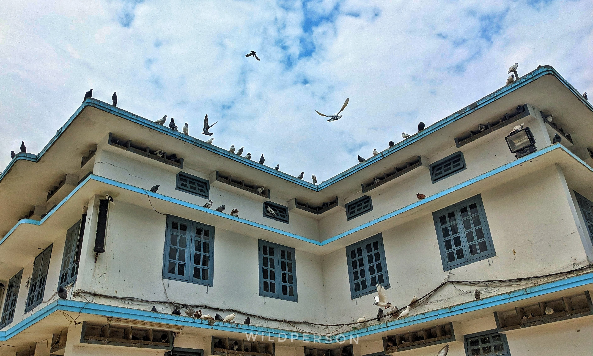
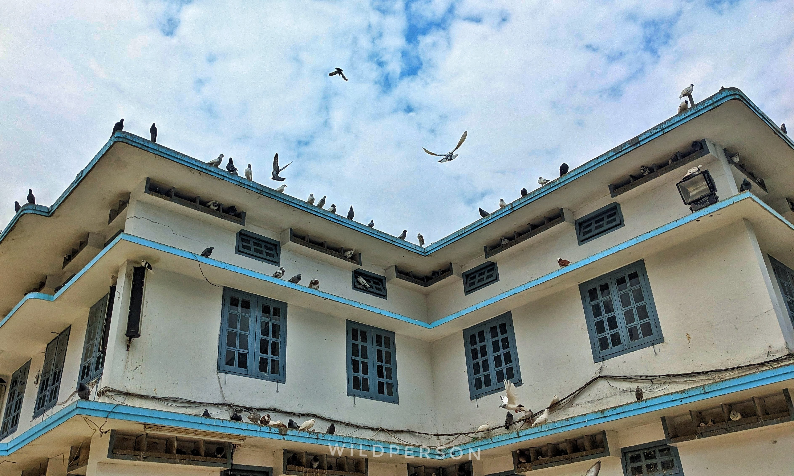
.jpeg) 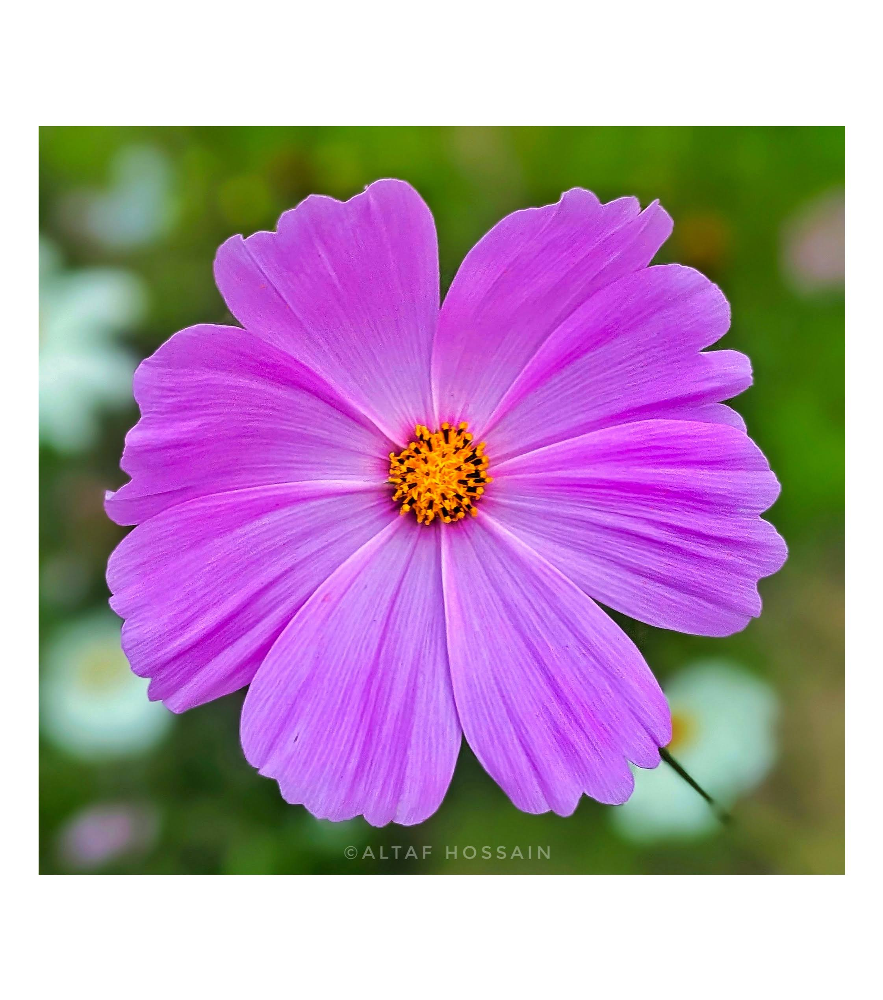
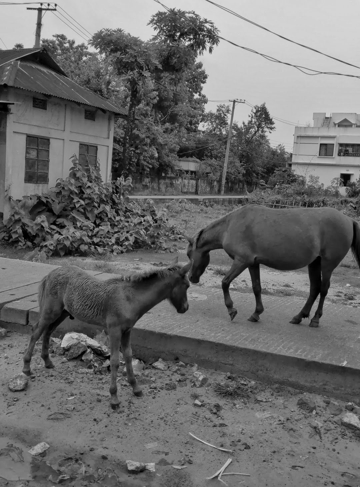
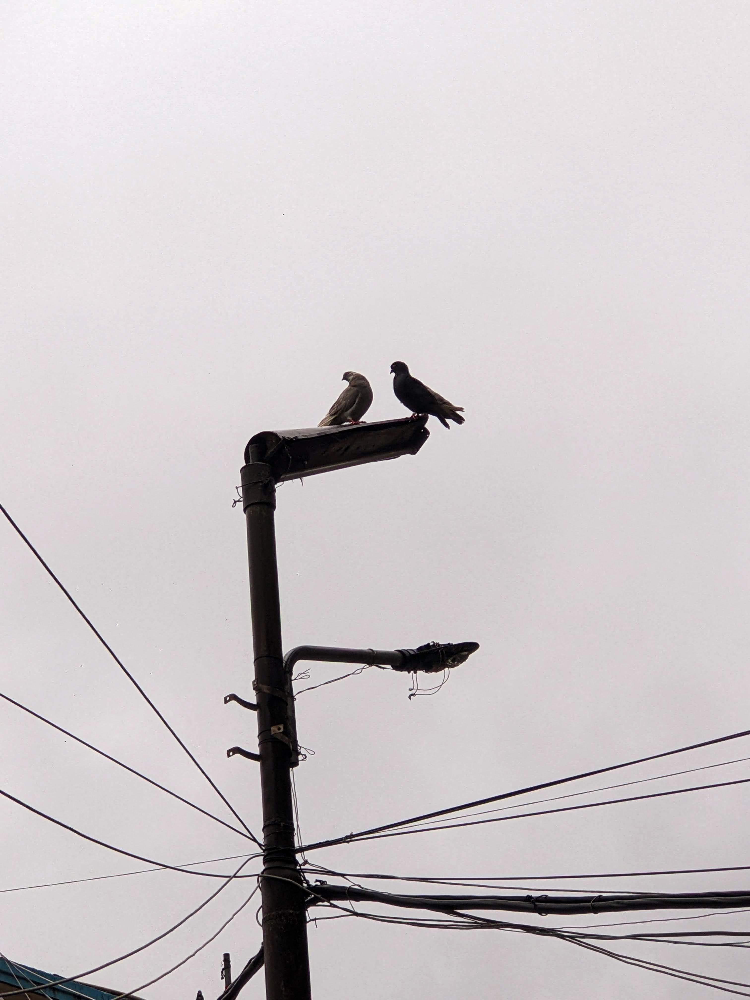
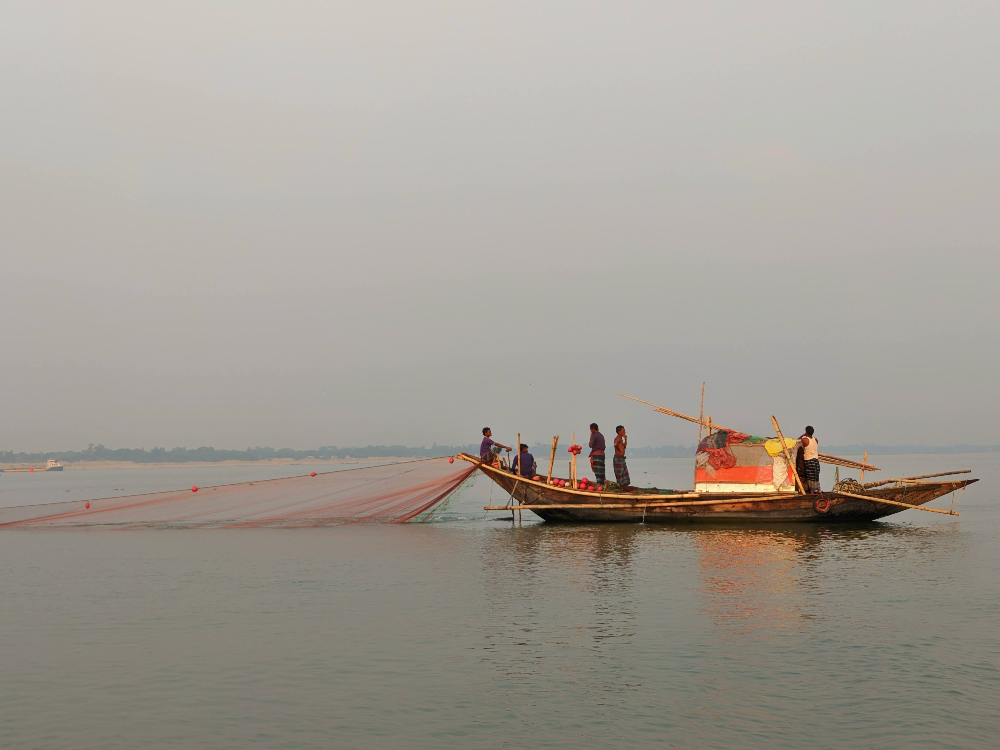
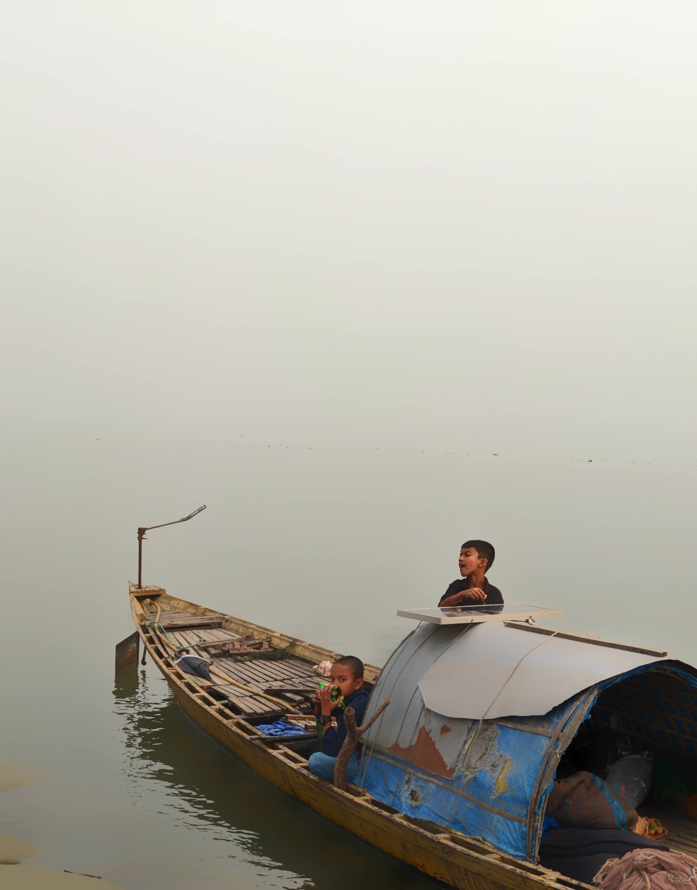
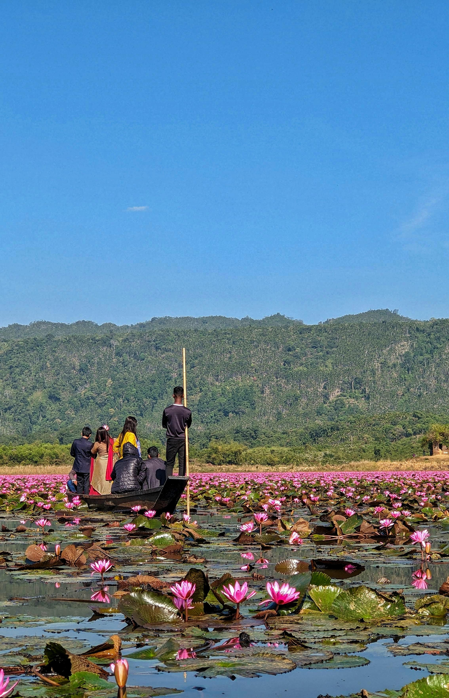
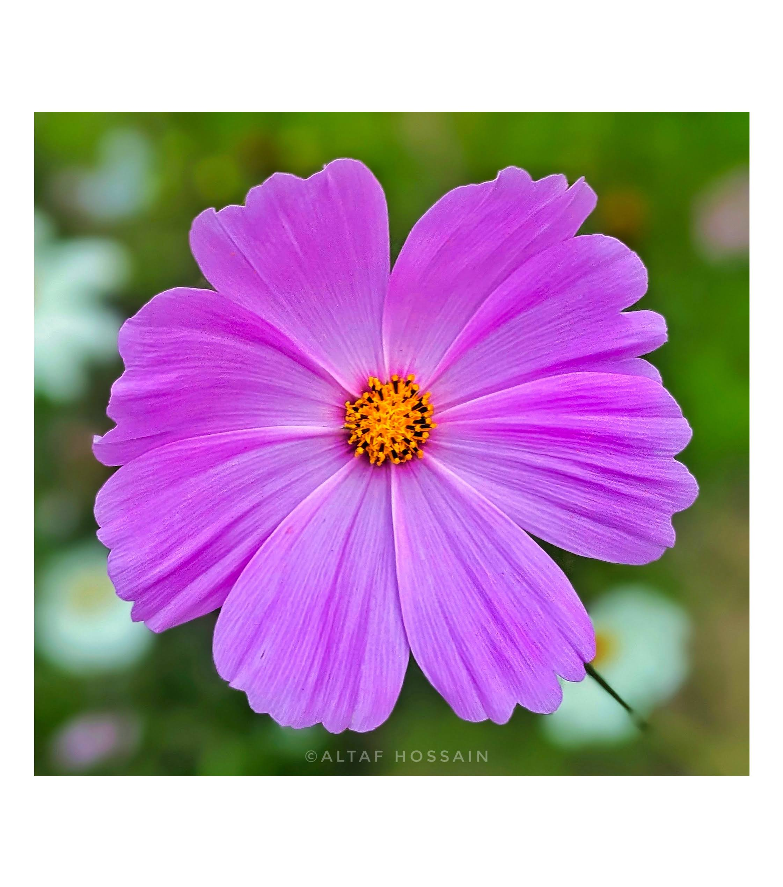
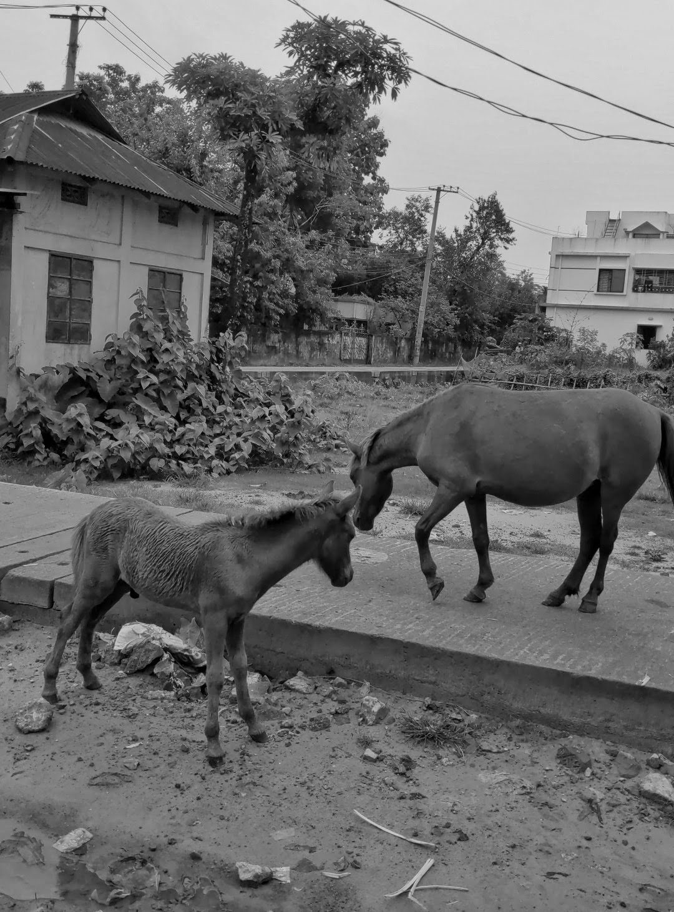
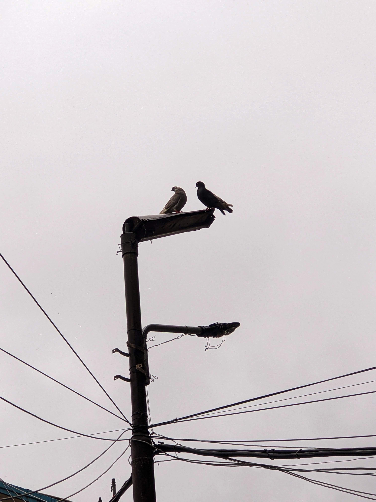
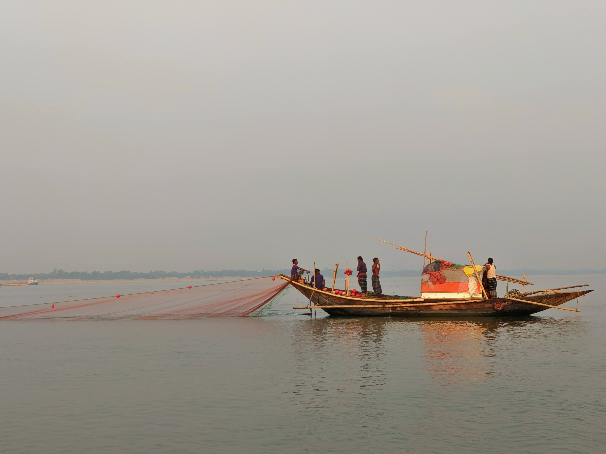
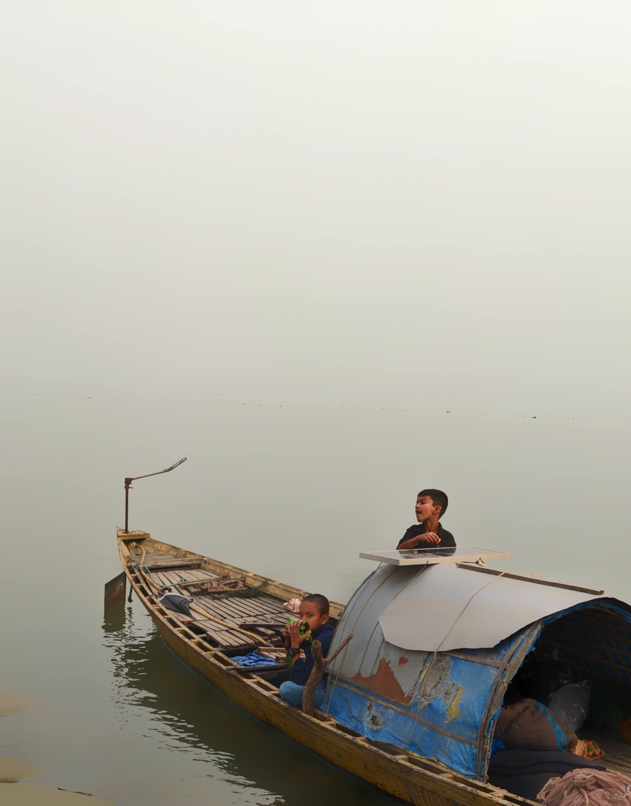
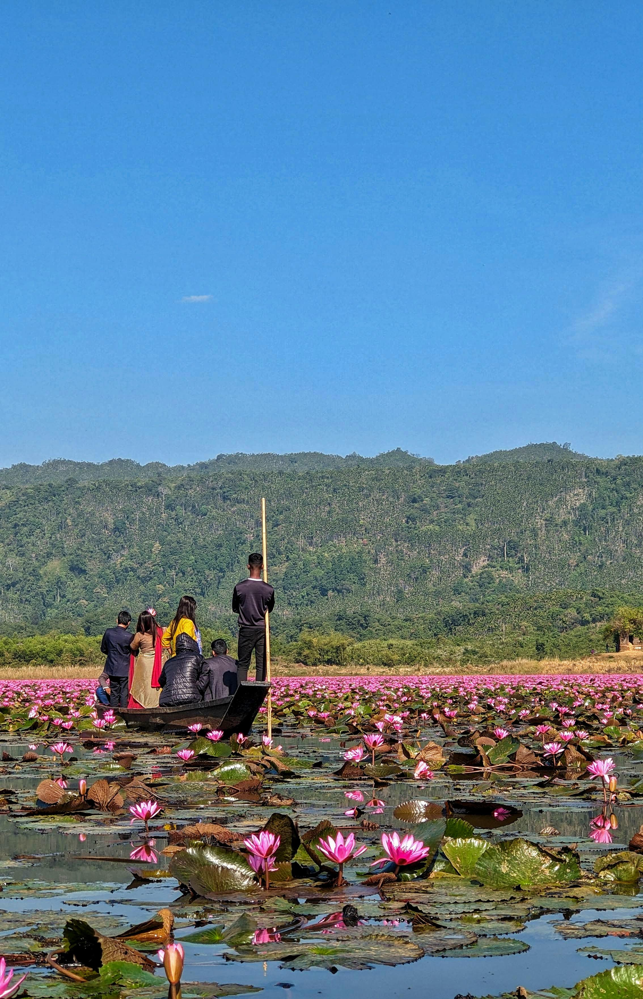
Interests
- Photography
- Traveling
- Music
- Reading Novel
- Cinema
- Riding Bikes